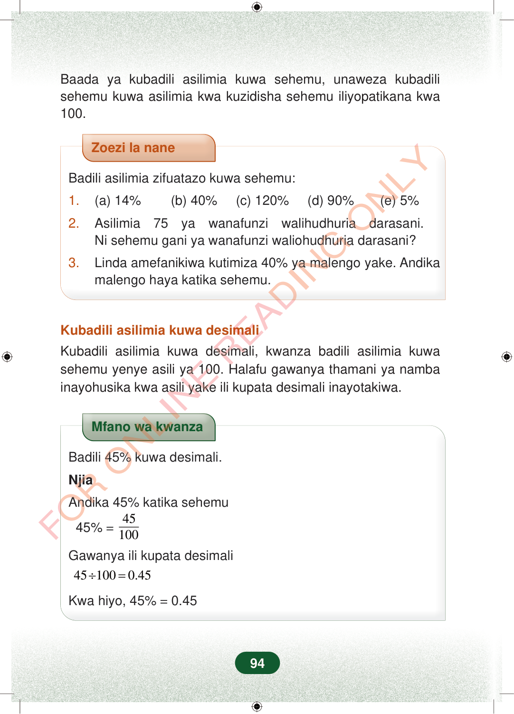

Baada ya kubadili asilimia kuwa sehemu, unaweza kubadilisehemu kuwa asilimia kwa kuzidisha sehemu iliyopatikana kwa100.Zoezi la naneBadili asilimia zifuatazo kuwa sehemu:1.(a) 14% (b) 40% (c) 120% (d) 90% (e) 5%2.Asilimia 75 ya wanafunzi walihudhuria darasani.Ni sehemu gani ya wanafunzi waliohudhuria darasani?3.Linda amefanikiwa kutimiza 40% ya malengo yake. Andikamalengo haya katika sehemu.Kubadili asilimia kuwa desimaliKubadili asilimia kuwa desimali, kwanza badili asilimia kuwasehemu yenye asili ya 100. Halafu gawanya thamani ya nambainayohusika kwa asili yake ili kupata desimali inayotakiwa.Mfano wa kwanzaBadili 45% kuwa desimali.NjiaAndika 45% katika sehemu45%=45100Gawanya ili kupata desimali451000.45÷=Kwa hiyo, 45%=0.4594
Baada ya kubadili asilimia kuwa sehemu, unaweza kubadili sehemu kuwa asilimia kwa kuzidisha sehemu iliyopatikana kwa 100.
Zoezi la nane
Badili asilimia zifuatazo kuwa sehemu:
1. (a) 14% (b) 40% (c) 120% (d) 90% (e) 5%
2. Asilimia 75 ya wanafunzi walihudhuria darasani. Ni sehemu gani ya wanafunzi waliohudhuria darasani?
3. Linda amefanikiwa kutimiza 40% ya malengo yake. Andika malengo haya katika sehemu.
Kubadili asilimia kuwa desimali
Kubadili asilimia kuwa desimali, kwanza badili asilimia kuwa sehemu yenye asili ya 100. Halafu gawanya thamani ya namba inayohusika kwa asili yake ili kupata desimali inayotakiwa.
Mfano wa kwanza
Badili 45% kuwa desimali.
Njia
Andika 45% katika sehemu
45% = 45
100
Gawanya ili kupata desimali
45 100 0.45 ÷ =
Kwa hiyo, 45% = 0.45
94
Baada ya kubadili asilimia kuwa sehemu, unaweza kubadili sehemu kuwa asilimia kwa kuzidisha sehemu iliyopatikana kwa 100.Zoezi la naneBadili asilimia zifuatazo kuwa sehemu:1.(a) 14%(b) 40%(c) 120%(d) 90%(e) 5%2.Asilimia 75 ya wanafunzi walihudhuria darasani.Ni sehemu gani ya wanafunzi waliohudhuria darasani?3.Linda amefanikiwa kutimiza 40% ya malengo yake.Andika malengo haya katika sehemu.Kubadili asilimia kuwa desimaliKubadili asilimia kuwa desimali, kwanza badili asilimia kuwa sehemu yenye asili ya 100.Halafu gawanya thamani ya namba inayohusika kwa asili yake ili kupata desimali inayotakiwa.Mfano wa kwanzaBadili 45% kuwa desimali.NjiaAndika 45% katika sehemu<math><mrow><mn>45</mn><mi>%</mi><mo>=</mo><mfrac><mn>45</mn><mn>100</mn></mfrac></mrow></math>Gawanya ili kupata desimali<math><mrow><mn>45</mn><mo>÷</mo><mn>100</mn><mo>=</mo><mn>0.45</mn></mrow></math>Kwa hiyo, 45% = 0.45